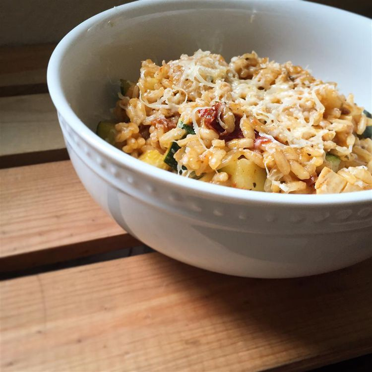

Zucchini Risotto

Description
This creamy main dish, zucchini risotto, gets a splash of color by adding zucchini, sun-dried tomatoes, and
basil.
With much less butter than in a typical risotto recipe and no wine, there's no running around for ingredients you
don't have!
Ingredients
- 7 cups vegetable or chicken stock
- 1 tablespoon unsalted butter
- 1 medium onion (chopped)
- 2 cups Arborio rice (uncooked)
- medium zucchini (thinly sliced with a vegetable peeler)
- 10 sun-dried tomatoes (softened and chopped)
- 1 teaspoon dried thyme (crushed)
- 6 tablespoons freshly grated Parmesan (or mozzarella) cheese
- 1 tablespoon chopped fresh basil leaves, or to taste (Optional)
- freshly ground black pepper to taste
Steps
- Bring stock to a boil in a saucepan, then reduce heat to a low simmer.
- Melt butter in a large, heavy bottomed stock pot over medium heat. Add onions; cook until softened, 2
minutes.
- Add rice; cook until lightly toasted, 2 minutes, stirring constantly. Gradually add simmering stock,
stirring continuously. Risotto will become "creamy" and slightly sticky. When almost finished, stir in
zucchini, sun-dried tomatoes, and thyme, adding stock as needed and stirring continuously. When finished,
the rice should be tender yet firm to the bite.
- Stir in 3 tablespoons Parmesan cheese and basil just before serving; divide among 6 bowls. Sprinkle servings
with remaining 3 tablespoons cheese; season with black pepper.